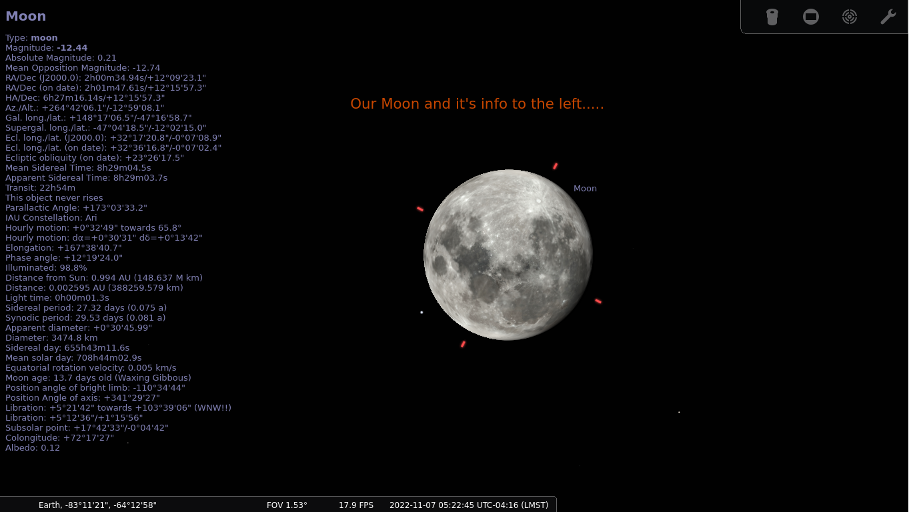
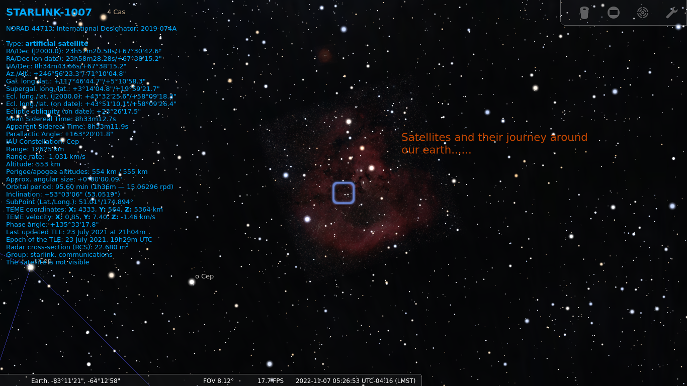

STELLARIUM
OVERVIEW
Stellarium is a free and open source software which shows the sky as real as it is when you are looking with a naked eye, using a binocular or by using a telescope. You can find and trace a star, an exoplanet, a satellite and lot more. The source code is hosted over github.
It’s a cross platform application, the binaries are available for Linux, Windows and Mac. There is even a web version that you can try in your browser before even installing the software into your system. The web version is having limited functionalities though, but it can give you an overview of what you see when you install. A mobile app too is available for Android and iOS under the name stellarium mobile and it’s a paid version.
Stellarium software comes handy for all ages, a child can navigate through the beauty of the sky, an amateur astronomer uses its tools to look deeper into the sky and a researcher can use it’s powerful scripting features for his/her simulations.

Figure 1: Stellarium!!!

Figure 2: Moon!!!

Figure 3: Star-link satellite!!!
- Web site - https://stellarium.org/
- Source code - https://github.com/Stellarium/stellarium
- Web version - https://stellarium-web.org/
My channels:
- Git-hub - https://github.com/cosmolabs
- YouTube - https://www.youtube.com/channel/UCy7FYIeM0naiPmFkiDOVLhw
[* Site Under Construction, reuse the data at your own risk]